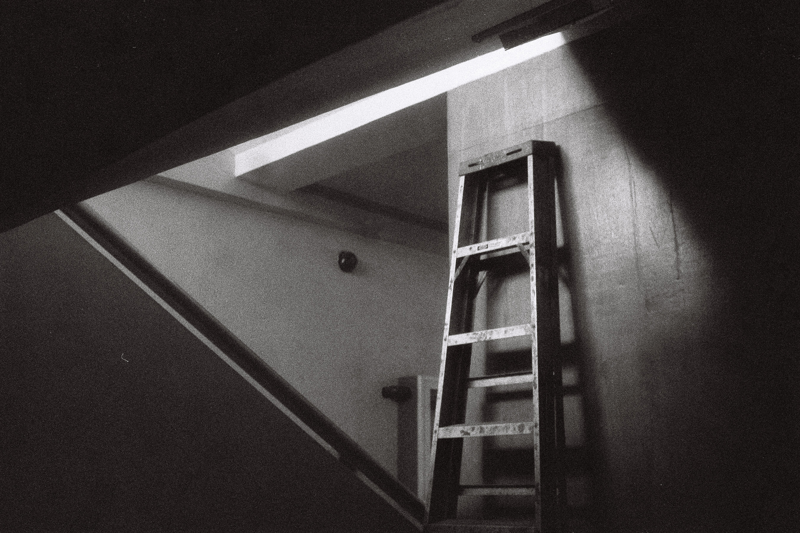
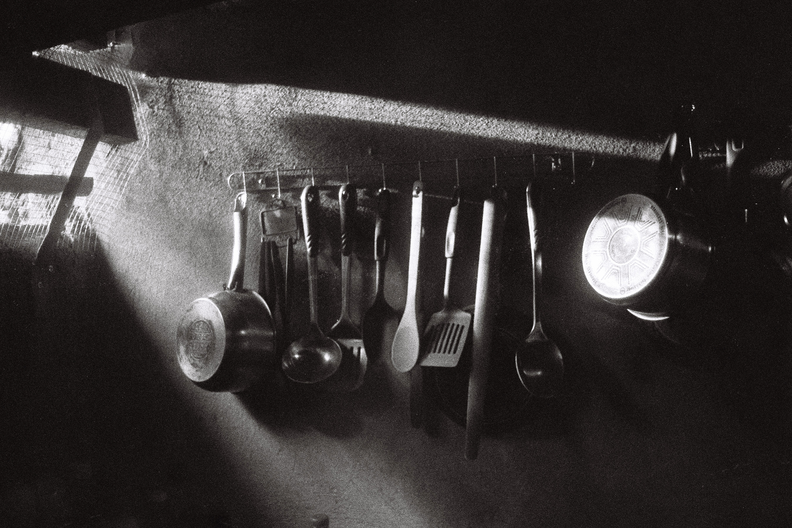

Monochrome Memories: What Black and White Film Taught Me About Light, Failure, and Surprise

I shoot film—not for nostalgia, but for the process. There’s something grounding about working with limitations, something rewarding in the wait. Recently, I’ve been exploring how to use light more intentionally, especially through the harsh contrasts of black and white photography. This isn’t a tutorial. It’s a personal reflection on what one roll of film taught me.

The Experiment
I loaded my Canonet QL17 with a roll of Agfa APX 400 black and white film. My goal wasn’t to get clean or balanced exposures—I wanted to understand how light really behaves. I wanted to let the highlights lead and allow the shadows to fall where they may. The camera’s built-in light meter wasn’t working, so I relied on a hot shoe light meter, along with the Sunny 16 rule when needed. I used manual settings throughout the roll, exposing for the brighter parts of the scene and deliberately underexposing by one stop. I knew this meant risking detail in the shadows, but that was part of the point.
 The Challenge of Film
With digital, you can shoot a hundred frames and know exactly what you got. Film doesn’t offer that luxury. No screen. No histogram. No second chances. Every click is a small act of faith. There’s always that quiet doubt when you finish a roll: did it work? Did I expose it right? Or did I just waste 36 frames? But that fear is part of the growth. You’re not just learning how your camera works—you’re learning to let go of control.
The Moment the Scans Arrive
After days of waiting, the scans finally came in. Opening them felt like unwrapping something half-forgotten. I didn’t expect much, to be honest. But as I scrolled through the images, I started seeing things I hadn’t noticed while shooting. Certain frames had a rawness I loved—deep shadows cutting across everyday scenes, highlights glowing just enough to hold the shape of the moment. The photos weren’t perfect, but they felt honest. And some were exactly what I had hoped for.
Surprising Successes
The biggest surprise wasn’t that some frames worked—it was how the ones I thought had failed came back with character. A misjudged exposure. A frame I thought was too dark. A scene I wasn’t even sure was worth shooting. Yet those images held something: mood, mystery, texture. They taught me to stop trying to control everything and start paying more attention to feeling.
What Film Taught Me
This experiment taught me patience. It taught me to trust my instincts, to stop relying on instant feedback, and to allow space for mistakes. But more than that, it taught me to see differently. Not just to expose correctly, but to recognize how light creates emotion. How a shadow can say more than a highlight. How imperfection can feel more honest than precision.
Closing Thoughts
If you’ve ever thought about experimenting with film, especially black and white, I’d say: go for it. Don’t wait until you feel ready or think you have it all figured out. Let the uncertainty teach you. Let the surprises keep you curious. Sometimes the best photos are the ones you almost didn’t take.